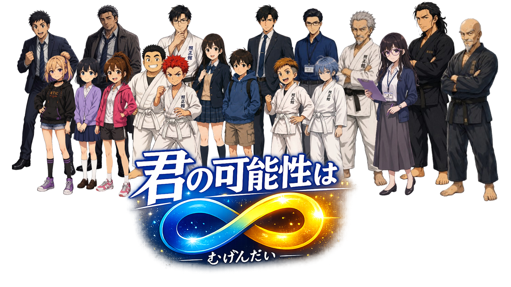

作品紹介
何をやっても失敗ばかりで、自信のなかった少年・照（てる）が、柔道と出会い、勇気をもって、前向きに挑戦していく姿を描きます。
アニメはYouTubeで順次公開していきます。

Infinite Possibility
何も取り柄のなかった少年が、柔道を通じて少しずつ自分の可能性に気づいていく成長物語。
何をやっても失敗ばかりで、自信のなかった少年・照（てる）が、柔道と出会い、勇気をもって、前向きに挑戦していく姿を描きます。
アニメはYouTubeで順次公開していきます。
 主人公の照（てる）が柔道と出会うきっかけとなったエピソードの前半
主人公の照（てる）が柔道と出会うきっかけとなったエピソードの前半
 主人公の照（てる）が柔道と出会うきっかけとなったエピソードの後半
主人公の照（てる）が柔道と出会うきっかけとなったエピソードの後半
第１話「大器晩成（たいきばんせい）」の漫画を、サイト内で読むことも、PDFでダウンロードすることもできます。